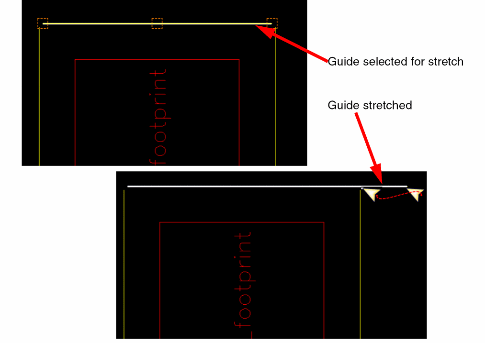
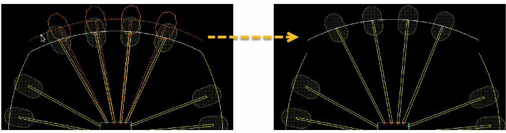
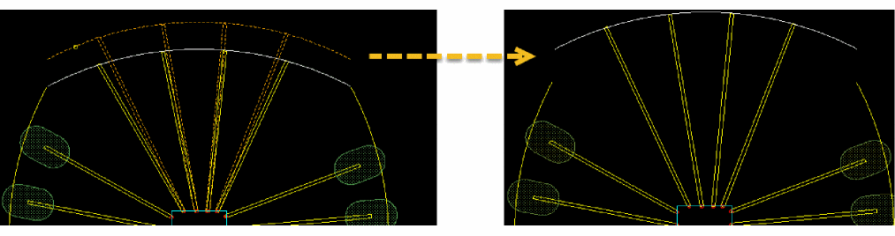

Editing a Guide
The Module – Guide menu includes the Stretch and Move commands that let you edit guides.
- Choose Module — Stretch.
-
Select the guide to be stretched. Drag lines are displayed on the guide.If the guide is not selectable, enable the selection setting of the corresponding layer-purpose pair in the Palette assistant.Three boxes are displayed at either ends and in the middle of the selected guide. Hover the cursor over a box to stretch the guide from that position.
-
Click and drag the guide to stretch it in the required direction. Release the pointer.
The guide is stretched. Any existing bond fingers or wires are re-positioned accordingly.

-
Choose Module – Move. Alternatively, you can use the shortcut key
M. - Select the guide to be moved.
- Move the pointer to a new location.
- Click where you want to place the guide. The guide is moved to the new location. Any existing bond fingers or wires are moved accordingly.
The following images depict the movement of guides with bond fingers.

The following images depict the movement of guides without bond fingers.

Related Topics
Return to top